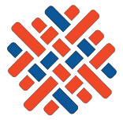
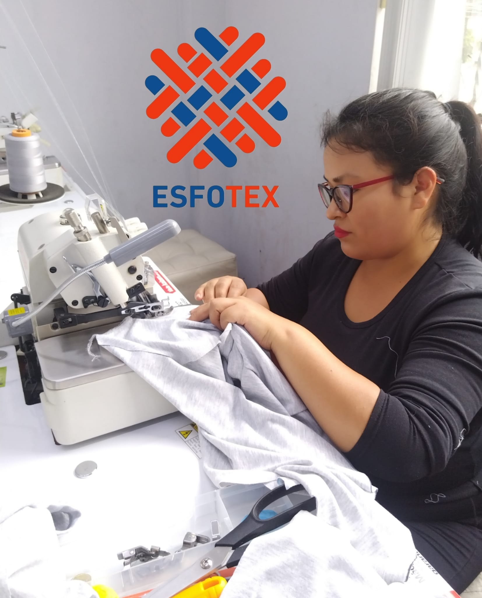

ESFOTEXAprende a dominar la máquina recta, remalladora y acabados básicos para confeccionar prendas con buena calidad y rapidez.
Este curso está diseñado para personas que quieren aprender una habilidad práctica, rentable y con alta demanda laboral.
👉 No necesitas experiencia previa, nosotros te enseñamos paso a paso desde cero.

En nuestro curso aprenderás:
¿Necesito experiencia previa? No, empezamos desde cero y avanzamos con práctica guiada.
¿Qué máquinas usaré? Principalmente recta y remalladora, con ejercicios orientados a confección real.
¿Hay certificación? Sí, recibes una certificación de ESFOTEX al completar el Módulo.